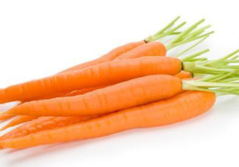

Морковь – двулетнее растение, в первый год жизни образует
розетку листьев и корнеплод,
во второй год жизни – семенной куст и семена. По содержанию каротина морковь
уступает лишь сладкому перцу. Экспериментально установлено, что морковь
активизирует внутриклеточные окислительно-восстановительные процессы,
регулирует углеводный обмен, обладает антисептическим, противовоспалительным,
обезболивающим и ранозаживляющим свойствами.
Капу́ста огородная(лат. Brássica olerácea) —
двулетнее растение, сельскохозяйственная
культура; вид рода Капуста (лат. Brassica) семейства Капустные (Крестоцветные).
Капуста — ценный диетический продукт, рекомендуемый больным подагрой, жёлчнокаменной
болезнью, атеросклерозом, при избыточной массе тела
Огурцами (Cucumis sativus) называют
травянистый однолетник семейства Тыквенные,
плоды которого имеют форму длинного цилиндра, окрашены в зелёный цвет – от
светло-салатовых до тёмно-зелёных оттенков. Огурцы богаты сложными органическими
веществами, которые играют важную роль в обмене веществ. Эти вещества
возбуждают аппетит, способствуют усвоению других продуктов питания
и улучшают пищеварение
Плод однолетних травянистых растений семейства паслёновых.
Плоды сладкого перца -
ложные пустотелые ягоды, многосемянные, красные, оранжевые, жёлтые или коричневые,
разнообразной формы и величины. В сладком перце сожердатся витамины С, В1, В2, В9,
Р, РР и каротин, поэтому людям страдающим депрессией, сахарным диабетом,а также при
ухудшении памяти,бессоннице,упадке сил следует включать перец в меню. По количеству
витамина С перец превосходит лимоны и черную смородину.
картофель - вид многолетних клубненосных травянистых растений из рода Паслён
(Solanum) семейства Паслёновые (Solanaceae) В картофеле отмечается
повышенное содержание углеводов, а его калорийность составляет 80 кКал на
100 г сырого продукта. В 100 г отварного картофеля – 82 кКал, а в 100 г
жареного – 192 кКал. Энергетическая ценность сушеного картофеля – 298 кКал на 100 г.
Чрезмерное употребление данного продукта может стать причиной ожирения.
Плод однолетних травянистых растений семейства паслёновых. Плоды сладкого перца
- ложные пустотелые ягоды, многосемянные, красные, оранжевые, жёлтые или
коричневые, разнообразной формы и величины. В сладком перце сожердатся витамины
С, В1, В2, В9, Р, РР и каротин, поэтому людям страдающим депрессией, сахарным
диабетом,а также при ухудшении памяти,бессоннице,упадке сил следует включать
перец в меню. По количеству витамина С перец превосходит лимоны и черную смородину.
Тома́т, или помидор (лат. Solánum lycopérsicum) — однолетнее или многолетнее травянистое
растение, вид рода Паслён (Solanum)[2] семейства Паслёновые (Solanaceae). Томаты и
их сок благодаря высокому содержанию железа полезны при сердечно-сосудистых
заболеваниях и малокровии. Вещества, содержащиеся в томатах, нормализуют обмен
веществ, стимулируют работу почек и кишечника, снижают давление и уровень
холестерина в крови.